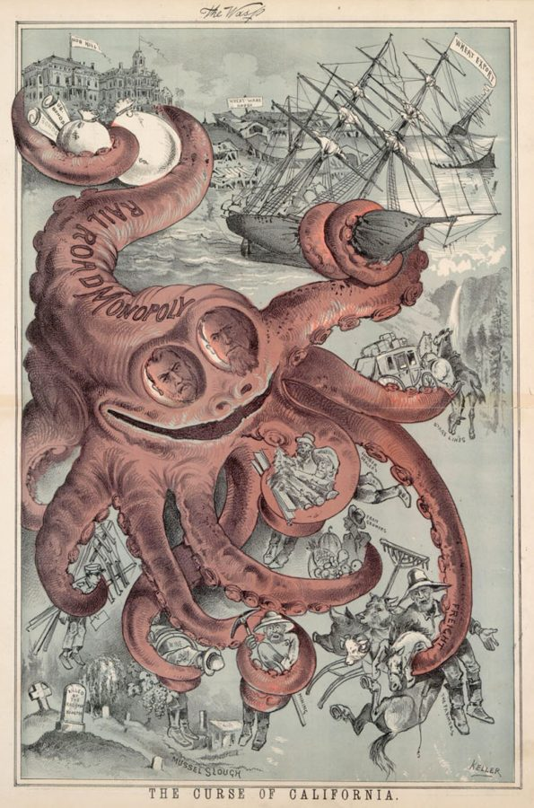
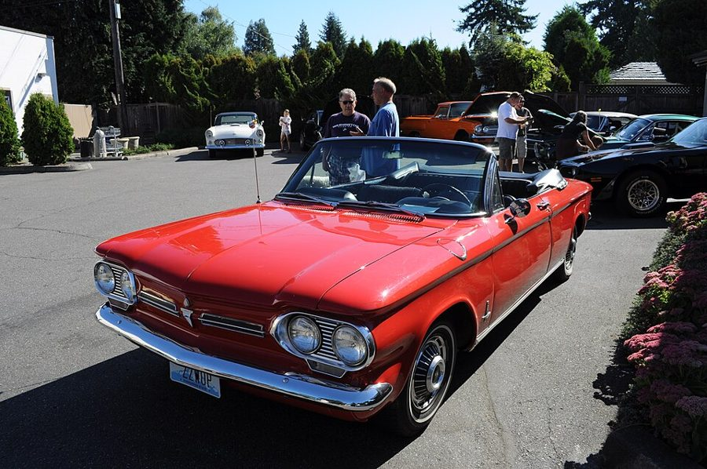
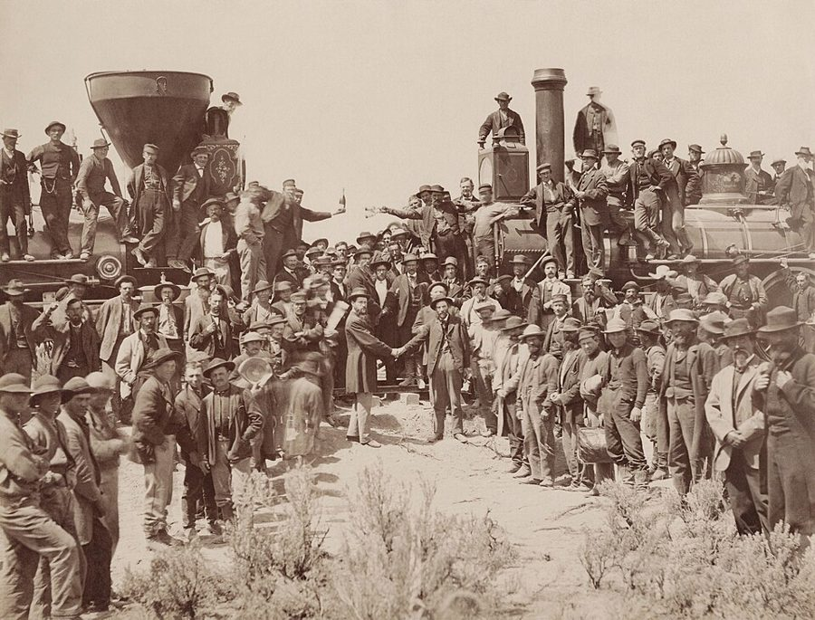
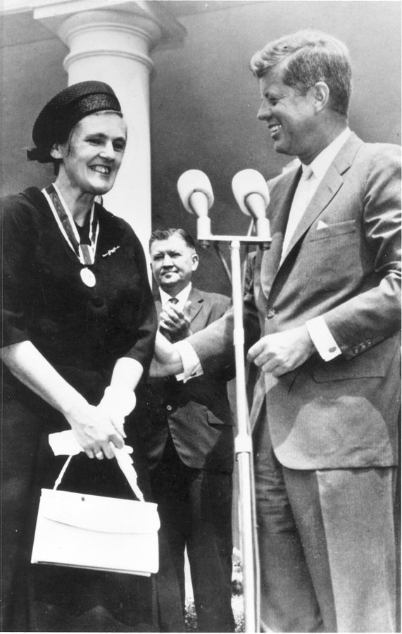
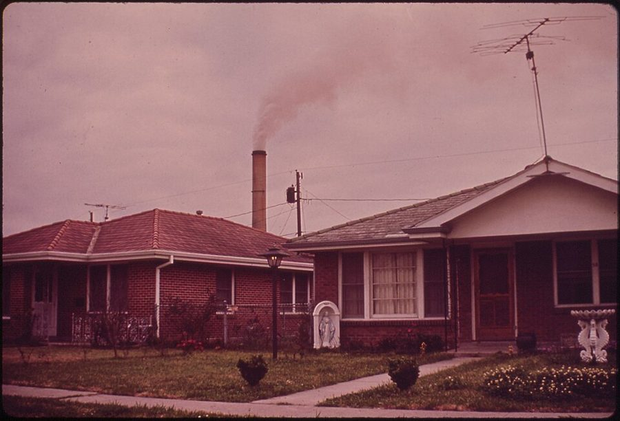
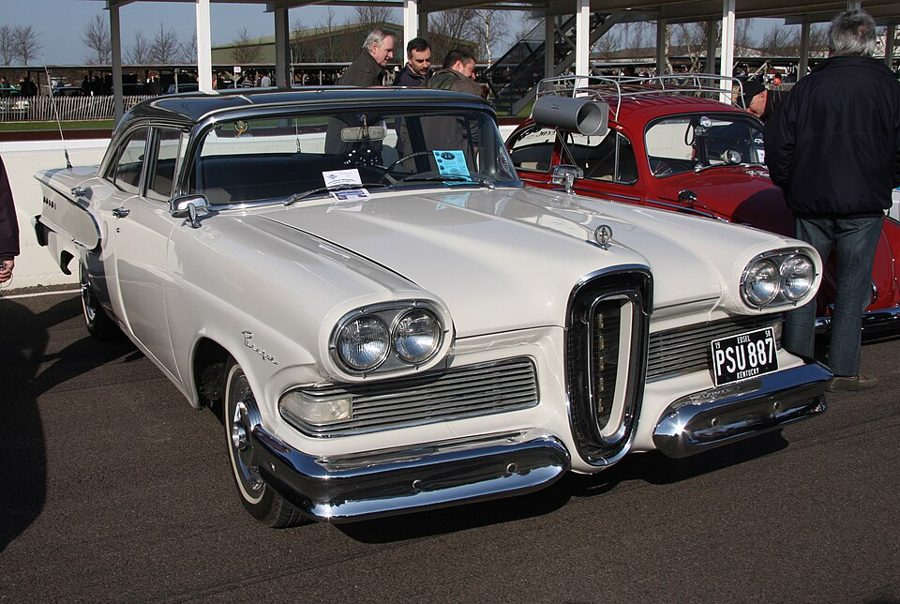
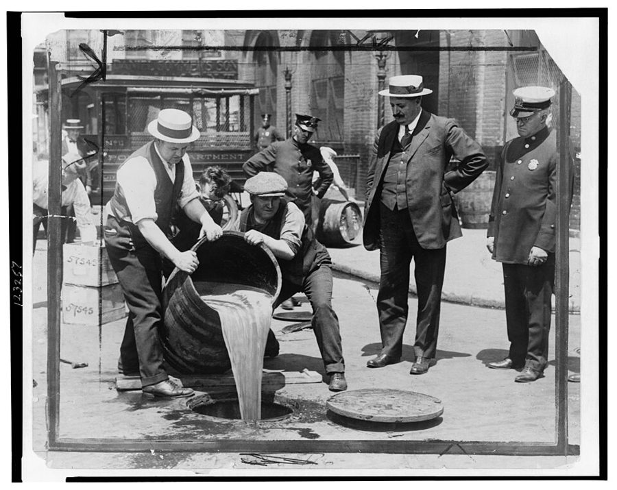

这一章在做什么
这一章拿第 1 章的「外部性」和「政府失灵」去看监管机构。作者先承认市场会骗人、会伤及旁人，再问：设一个机构来保护消费者，最后保护了谁？他挨个过了五个机构：管铁路运价的州际商务委员会、管药的 FDA、管日用品安全的委员会、环保局、能源部，说它们都落进同一个规律：干预造出权力，权力落到最上心的人手里。读的时候抓两条线：这个规律凭什么成立；作者给的市场办法够不够用。

《加州的祸害》，旧金山讽刺周刊 The Wasp 1882 年 8 月的漫画，把铁路垄断画成章鱼。§2 说当年的漫画家最爱这么画，作者也承认铁路的政治影响确实很大；ICC 就是在这种情绪里成立的。George Frederick Keller，公有领域，维基共享资源 读之前：先下注
第 1 章说政府有四项职责，其中第三项（处理外部性）最容易被拿来为任何干预辩护，所以想让政府多管一件事，要先把好处和代价算清楚。这一章就是把这本账算在五个具体的机构上。套路和第 4 章（福利）一样：好心的计划，结果和本意相反。引言里说政治领域也有一只「看不见的手」，把一心为公的人引去替私人利益办事，这一章是它最集中的例子。下一章《谁在保护工人》是它的姊妹篇。
1962 年起，美国的新药上市前不光要证明安全，还要证明有效。作者怎么算这条规矩的总账？
挡住了很多害人的药，好处远大于代价
好处和代价大致相抵，只是药变贵了
耽误好药造成的伤害，远大于挡住坏药的好处
规矩本身没错，毛病出在 FDA 人手不够、官员不得力
还不够严，已经上市的老药也该一并重审
1887 年，美国成立州际商务委员会（ICC）来管铁路运价。按作者的说法，这个机构后来主要在替谁办事？
受铁路欺负的中西部农民
普通乘客和托运人，运价确实降下来了
联邦政府自己，借机扩大了权力
铁路公司，后来又加上卡车公司
华尔街的银行家
市场有时确实会骗人、会伤及旁人。可是政府设一个机构来「保护消费者」，最后保护的是谁？不靠命令，消费者还能靠什么？
作者说政府干预服从的是「科学规律」，不是立法者的本意。他凭什么说这是规律，而不是 ICC 碰巧用错了人？§2
FDA 官员可能犯的两种错误，为什么分量不一样？这个道理能搬到别的审批上吗？§3
作者承认环境是政府该管的事。那他在这一节反对的到底是什么？§5
没有政府把关，消费者靠什么？作者列的几种办法里，你觉得哪一种最不够用？§7
这一章的论证骨架
这一章前面开题（§1），中间五节各讲一个机构（§2–§6），最后两节给答案和警告（§7–§8）。§2 最长，ICC 的故事里夹着一段讲干预的「自然史」的总结，是全章的论证核心；后面四节都在印证它，读的时候拿它当模板去套。§5 例外：作者承认环境是政府该管的事，他反对的是管法。
批评者：卖家会骗人，交易会伤及旁人
作者：批评成立；要问的是药方会不会比病还糟 · §1
药方：设监管机构，从一行一管变成跨行业 · §1
ICC · §2
运价被抬高
铁路之后管卡车
FDA · §3
新药更少更慢
两种错误不对称
CPSC · §4
标准一刀切
错了就是大错
EPA · §5
命令代替价格
问对错不问多少
DOE · §6
限价造出短缺
合成燃料计划
共同的规律：干预造出权力，被最上心的利益接管
改革者走开，被管的行业留下 · §2 的「自然史」
市场的办法 · §7
竞争、零售商把关、品牌、
检测机构、自由贸易
非管不可时，用价格
排污费 · §5
放开油价 · §6
警告 · §8：禁酒令，「为你好」的管制会走到哪
本站画的示意图。五个机构的毛病各不一样，作者要读者看出的是中间那一层：同一个规律在每个机构身上重演。 边读边填：每行一个问题，读到答案就写一两句。只存在你这台设备的浏览器里，别人看不到。
读完了？对照我找到的
问题：卖家会利用顾客的无知多要钱、卖次货；交易会影响旁人的空气、水和食品安全。
规律：弊端 → 改革者和利益方结盟 → 立法授权 → 改革者走开 → 利益方掌权 → 出问题就扩大干预 → 官僚化，谁都得不到好处，却废不掉。
证据：每年的新化学实体少了一半多；开发一种药从约 50 万美元、25 个月涨到 1978 年的 5400 万美元、约 8 年；英国有而美国没有的药更多，上市也更早。
机制：市场上新东西一点点试用，出了错范围小、能逐步改；统一标准事先定死、人人照办，Tris 一下子用到了 99% 的童装睡衣上。
方案：按排放量收费。企业自己找最便宜的减排办法；费率高低能透露减排的真实成本；收上来的钱可以补偿受害的人。
诊断：1971 年以来对原油和成品油的最高限价；取消全部价格管制。
替代：零售商（百货公司、Sears）替你把关，品牌的信誉，私人检测机构；根本上是竞争和自由贸易。
分节地图
原书这一章没有给节编号。§1 是第一个小标题之前的开篇（开篇第一段是斯密的引文，照抄的是它后面那一段的开头几个词），§2–§8 的粗体是书里印的全大写小标题，Kindle 里可以直接搜。每一节下面自动标出纸书页码、在本章录音里大约第几分钟、译本里对应的小节名。这一章长，建议分四次读；读完一节回来打个勾。
第一次坐下§1–§2 · 约 5100 词 · 开题，ICC 的一生
We cannot indeed depend on…约 2000 词 先认批评有理，再拿机构、预算、公报页数的猛增开题，末尾预告五个机构。译本没有开头斯密那段。 THE INTERSTATE COMMERCE COMMISSION约 3200 词 铁路大扩张、农民反铁路，到 ICC 管上卡车和航空。讲「自然史」那一段是全章的骨头，读两遍。 第二次坐下§3–§4 · 约 4000 词 · 药和日用品
FOOD AND DRUG ADMINISTRATION约 2700 词 从《屠场》到 1962 年修正案；药滞的数字；审批官员的两种错误；「会汪汪叫的猫」。 CONSUMER PRODUCTS SAFETY COMMISSION约 1200 词 跨行业的新型机构。两个例子：喷雾胶的禁令和儿童睡衣里的 Tris。 第三次坐下§5–§6 · 约 3300 词 · 环境和能源
ENVIRONMENT约 1900 词 这里作者承认政府该管；抓「合适的污染量」和排污费。译本把排污费那段的产量增减译反了。 DEPARTMENT OF ENERGY约 1400 词 能源危机只有一个原因：限价。再驳卡特的合成燃料计划。 第四次坐下§7–§8 · 约 2000 词 · 市场的答案，禁酒令
THE MARKET约 1500 词 全章的答案：竞争、零售商、品牌、检测机构；顺带驳「广告操纵消费者」，再拿财政部的广告开玩笑。 CONCLUSION约 600 词 拿禁酒令收尾：「为你好」的管制推到头会怎样。
背景：作者默认你知道的事
按在书里出现的顺序排，标题前是节号。书写于 1979 年，书里的「今天」「近来」都是那时候；书里的钱是 1979 年的美元，大约相当于今天的四倍多。
§1 一场运动从三件事开始Rachel Carson 的《寂静的春天》（1962）写 DDT 等农药对鸟类和生态的伤害，美国的环保运动由此兴起。参议员 Kefauver 从 1959 年起调查药价，后来促成了 1962 年的药品修正案。律师 Ralph Nader 1965 年出版《任何速度都不安全》（Unsafe at Any Speed），第一章专攻雪佛兰 Corvair 的操控，第二年国会就通过了汽车安全法。
Rachel Carson 蕾切尔·卡森 美国海洋生物学家、作家，原在联邦鱼类和野生动物管理局工作。
Estes Kefauver 埃斯蒂斯·基福弗 田纳西州的民主党参议员，主持过有组织犯罪、垄断和药价的调查。
Ralph Nader 拉尔夫·纳德 消费者运动的代表人物，后来办了一批研究和倡导组织。作者在这一章里一再点他的名。
Edward Teller 爱德华·泰勒 匈牙利裔美国物理学家，美国氢弹的主要推动者，力挺核电。

一辆 1962 年的雪佛兰 Corvair 敞篷车，2011 年在西雅图的一次老爷车展上。Corvair 的发动机装在车尾，所以车头没有散热格栅。§1 说它后来成了收藏品。Joe Mabel，CC BY-SA 3.0，维基共享资源 §1 用《联邦公报》（Federal Register）的页数量管制有多少：联邦机构的新规章、拟议规章都要登在这份每个工作日出版的公报上。
§2 铁路和农民1869 年 5 月，联合太平洋和中央太平洋两条铁路在犹他接轨，第一条横贯大陆的铁路通车。书里写 Promontory Point，接轨的地方其实叫 Promontory Summit，当年的报道就常混用。运价直接决定中西部农民的收入，格兰其（Grange）运动、绿背纸币党、农民联盟、后来的平民党（Populist party）都把铁路当靶子。Bryan 是平民党支持的 1896 年总统候选人。

1869 年 5 月 10 日的接轨仪式。中间握手的是两家铁路公司的总工程师，两边是各自的机车。§2 从这里讲起。Andrew J. Russell 摄，Adam Cuerden 修复，公有领域，维基共享资源 §2 ICC 和它的后代ICC 依 1887 年的《州际商务法》成立，是美国第一个联邦管制机构。首任主席 Thomas Cooley 是密歇根州的法官，也给铁路做过事。Olney 那封信，常见的记载说写于 1892 年 12 月，当时他还是铁路公司的律师，第二年 3 月才当上司法部长。1935 年 ICC 接管州际卡车运输；1938 年的民用航空法把航线和票价交给另一个机构，就是后来的民用航空委员会（CAB）。
Amtrak 1971 年 5 月起接管美国城际客运。书里说纽约中央铁路「戏剧性地破产」，破产的其实是 Penn Central：它由纽约中央和宾夕法尼亚两家铁路 1968 年合并而成，1970 年 6 月破产，1976 年联邦组建 Conrail 接手东北部的货运线。Freddie Laker 1977 年开了伦敦到纽约的廉价航班；经济学家 Alfred Kahn 1977–1978 年主持 CAB，随后国会通过了 1978 年的航空放松管制法。
§3 从《屠场》到沙利度胺1906 年 Upton Sinclair 的小说《屠场》（The Jungle）写芝加哥的肉类加工厂，同年国会通过《纯净食品药品法》和《肉类检验法》，执行机构设在农业部，就是 FDA 的前身。1937 年一家药厂用二甘醇作溶剂做磺胺「酏剂」，一百多人死亡，第二年的新法要求新药上市前先证明安全。沙利度胺（thalidomide，也叫反应停）在欧洲等地当镇静剂和止孕吐药出售，造成数以千计的婴儿四肢畸形。
Frances Kelsey 弗朗西斯·凯尔西 FDA 的审评医生，一再要求厂家补交安全数据，沙利度胺因此没有在美国正式上市。
William Wardell 威廉·沃德尔 罗切斯特大学的临床药理学家，较早系统比较英美两国新药上市先后的研究者。
Sam Peltzman 萨姆·佩尔兹曼 芝加哥大学经济学家，1973 年发表对 1962 年药品修正案的成本收益研究。

1962 年 8 月，肯尼迪总统给 Frances Kelsey 颁发联邦文职杰出服务总统奖。§3 拿这枚奖章说明审批官员为什么最怕批错药。美国食品药品管理局，公有领域，维基共享资源 §3 的甜蜜素（cyclamates）1969 年被禁，糖精（saccharin）1977 年被提议禁用，国会随即叫停。「我们中的一位」在《新闻周刊》上写的专栏，作者是 Milton Friedman，他 1966–1984 年在这本杂志写定期专栏。
§4–§5 消费品安全委员会和环保局消费品安全委员会（CPSC）依 1972 年的《消费品安全法》设立，1973 年 5 月开张。Tris 是一种含溴的阻燃剂，1977 年被禁用于童装。§4 顺带提到的 Firestone 500 是费尔斯通公司的子午线轮胎，1978 年大规模召回。环保局（EPA）是尼克松 1970 年 12 月设立的。§5 末尾的 Director 定律 见第 4 章：公共开支多半让中产阶级得益。

1973 年 3 月，路易斯安那州 Chalmette，铝厂的烟囱在住宅区上空冒烟。这是环保局成立后组织摄影师记录全国环境的 Documerica 项目里的一张。John Messina，美国环保局 Documerica 项目，公有领域，维基共享资源 §6 限价、禁运和能源部1971 年 8 月 15 日，尼克松宣布冻结工资和物价，后来各类管制陆续取消，石油的限价留了下来。1973 年第四次中东战争后阿拉伯产油国禁运，欧佩克把油价抬到约四倍。1977 年设能源部。1979 年 7 月卡特在电视讲话里提出合成燃料计划；书里说的「暴利税」当时还在国会，1980 年才通过。阿拉斯加输油管 1977 年完工，由几家石油公司出资修建。
§7 市场里的把关人Sears, Roebuck（西尔斯）和 Montgomery Ward 是当时美国最大的两家百货零售商，都靠厚厚的邮购目录起家。消费者研究社（Consumers’ Research）1920 年代末办起来；消费者联盟（Consumers Union）是 1930 年代中期它的一批罢工员工另立的，出版《消费者报告》。Edsel 是福特 1957 年秋推出的新品牌，两年多就停产，成了营销失败的代名词。

一辆 1958 年款 Edsel Ranger，摄于一次车展上。车头那个竖着的椭圆格栅是 Edsel 的标志。§7 说福特砸了大笔广告费也没把它卖出去。Brian Snelson，CC BY 2.0，维基共享资源 §7 的储蓄债券（savings bonds）是财政部卖给老百姓的小额国债。1970 年代通胀率高过它的利率，持有到期拿回的钱买得到的东西反而更少，利息还要交税，这是作者挖苦财政部广告的原因。
§8 禁酒令宪法第十八修正案 1920 年 1 月生效，全国禁止酿造、销售和运输酒类，1933 年 12 月由第二十一修正案废止。Billy Sunday 是当时最有名的巡回布道家。Al Capone 和 Bugs Moran 是芝加哥两个敌对黑帮的头目。laetrile 是用杏核里的仁提取物做的「抗癌药」，FDA 不准卖。安全带联锁装置是 1974 年款新车必装的，不系安全带就打不着火，同年国会就取消了这项要求。

1921 年，纽约市警察局副局长 John A. Leach（右二）看着执法人员把查获的酒倒进下水道。§8 用禁酒令说明「为你好」的禁令会走向哪里。作者不详，美国国会图书馆藏，公有领域，维基共享资源 这一章的经济学，先用中文过一遍
这一章用到、作者一句带过的几个概念。读之前过一遍，读的时候就不会卡在概念上。
集中的利益，分散的利益
一项管制给某个行业带来的好处，集中在少数几家公司身上，每家都值得派专人天天盯着；它让消费者多付的钱，摊到每个人头上只有一点点，没人值得为它跑一趟华盛顿。所以法案通过以后，坐在监管机构对面、懂行、每次听证都到场的，几乎总是被管的那一方。作者在 §2 用 ICC 讲的就是这个过程。经济学里后来管它叫「管制俘获」（regulatory capture），芝加哥大学的 George Stigler 1971 年把它写成了一套理论。打个比方：一个开源项目的配置规范，天天来提 PR 的是靠它吃饭的几家大公司，普通用户偶尔才看一眼，规范最后长成什么样不难猜。
一张牌照为什么值钱
ICC 只发了有限的卡车营运许可证，又很少让新人进来，有证的人就能收比竞争时更高的运价。这份多出来的利润年年都有，许可证的价钱就是把未来这些额外利润折算成今天的钱。书里引的估计：1972 年这些证加起来值 20 亿到 30 亿美元。作者的意思是，这笔「财富」不对应任何一辆卡车或一座仓库，它量出来的恰恰是管制让社会损失了多少。许多城市的出租车牌照也是同一个道理。
两种错误为什么不对称
审批一种新药可能犯两种错：把有害的药放进来，或者把好药挡在外面。作者的要点是两种错误的「能见度」不一样。批准了有害的药，受害者、照片、报纸头版都在；拒了好药，没用上药的病人死于原来的病，没人会把账记到审批官员头上。官员是理性的人，就会拼命避开看得见的那一种，宁可拒绝或拖延。程序员熟悉的版本：一个只因线上事故被追责、从不因功能延期被追责的发布审核流程，最后一定越来越慢。
这药其实是好药
这药其实有害
官员批准
官员不批准
做对了
病人用上了药
第一种错误
受害者看得见
官员上报纸头版
例：沙利度胺
第二种错误
受害者看不见
没人追究
例：§3 说的药滞
做对了
挡住了坏药
官员只怕第一种 → 宁可拒绝或拖延 → 新药更少、更慢、更贵 · §3
本站画的示意图。两种错误都是错误，只有一种会被人看见。 「合适」的污染量和排污费
把污染从很多减到一些很便宜，越往零减越贵；而每多减一点带来的好处越来越小。两条线相交的地方，多减一点的好处正好抵上代价，作者说这就是该追求的「合适」的污染量，不是零。命令式的管制规定每家装什么设备、排到什么标准；排污费（effluent charge）只规定每排一个单位交多少钱，减排便宜的企业自己会多减，贵的少减，同样的减排量总花费最少。这和第 1 章「用价格，不用命令」是一回事，经济学家通常把这个思路归到英国经济学家 Pigou 名下。
每多减一单位的代价或好处
减少的污染（越往右越干净）→
多减一点的好处
多减一点的代价
排污费定在这里
「合适」的污染量
零污染：
代价飞涨
左边：减得便宜，好处大，该减
本站画的示意图。费率定在交点的高度，企业会一直减到再减一单位比交费还贵为止，正好停在交点上。
英文 译本译作 一句话 regulatory agency 管制机构 / 监管部门 国会授权、能发规章和命令的政府机构。§1 natural history of government intervention 政府干预的必然命运 作者概括的一个循环：结盟、立法、改革者走开、利益方接管、再扩大干预。§2 long haul / short haul 长途 / 短途运输 同一条线上远程和近程的运价倒挂问题。§2 certificate of public convenience and necessity （译本拆开意译，大意是许可证） ICC 发的营运许可，没有它不能跑州际运输。§2 perfect competition 「完美」竞争 卖家很多、谁都能进来，没人能左右价格。作者说卡车业最接近它。§2 vested interests 既得利益集团 靠现行制度得利、因而反对改它的人。§2 special interests 特殊利益集团 和改革者结盟、事后接管机构的一方。§2 cartel 卡特尔 同行串通定价、分市场。铁路的「联营」、ICC 管下的卡车业、欧佩克都是。§2、§6 proof of efficacy 功效检验 1962 年起新药除了证明安全，还要证明有效。§3 drug lag 药品时滞 新药在美国比在别国晚上市甚至不上市。§3 market failure / government failure 市场失灵 / 政府失灵 找不到谁伤了谁时，市场办不好，政府也一样办不好。§5 effluent charge 对排出物征收费用；废物排放税 按排放量收费，用价格代替命令来控制污染。§5 Director’s Law 董事法则 公共开支主要让中产阶级受益，税却多由穷人和富人负担。§5 maximum / minimum price 最高限价 / 最低限价 限价低于市价造成短缺，保价高于市价造成过剩。§6 goodwill 信誉 品牌的名声值多少钱，会计上叫商誉。§7
这一章读译本要留意几处。开篇斯密那段话（不靠屠户、酿酒师、面包师的仁慈）译本没有，可 §7 又说「本章开头引过斯密」。thalidomide 一律译作「镇静剂」，药名丢了，它就是沙利度胺（反应停）。§2 末尾说 Nader 不可能不知道民航委员会会怎么判，译本译成了他「没有任何思路」，意思反了。§3 写《新闻周刊》专栏的「我们中的一位」是 Milton Friedman 本人，译本作「一位同仁」。§5 排污费那段，减排贵的产品应该减产、减排便宜的增产，译本把增减译反了。patent medicines 是江湖成药，不是专利药；Director’s Law 的 Director 是人名；Sears, Roebuck 是一家公司，不是两家。
词与短语
读英文时用；这一章读译本的话可以跳过。词条按在书里出现的顺序排，按节分组；读一节之前先把这一节的过一遍，读的时候就不用停。斜体小字是原句里连续的几个词，在 Kindle 里搜它就能找到那一句。标着「每个字都认识」的，是字面意思会把你带偏的。
§1 We cannot indeed depend on…
cajole
… They will cajole customers to buy …
哄骗，软磨硬泡
pass off on
… pass off on them shoddy products …
把（次货）冒充好货卖给
pass off A on B：把 A 冒充着塞给 B。shoddy 是质量低劣的。
avaricious
… himself and from avaricious sellers …
贪得无厌的
spillover
… from the spillover neighborhood effects of …
外溢的
spillover neighborhood effects 就是第 1 章的外部性。
the cure may not be worse than the disease
… the cure may not be worse …
药方是不是比病还糟
前面是 whether…：「会不会是药方比病还糟」。not 是这种问法的老式语气，不是否定。
unsafe at any speed
… Corvair as “unsafe at any speed” …
开多快都不安全
Nader 那本书的书名。
pocketbook
… of the consumer—primarily his pocketbook—was …
钱包，指经济利益
本章反复对照两种保护：护住消费者的钱包（价格），和护住他的人身安全。
in the single-industry mold
… continued in the single-industry mold …
照着一个机构管一个行业的老路子
mold 是模子。
cover the waterfront
… they covered the waterfront: the environment, …
无所不包
字面是「把整个码头都管了」，口语里指涵盖一切。
output per man-hour
… output per man-hour of all persons …
每工时产出
最常用的劳动生产率指标。
small is beautiful
… the “small is beautiful” movement, the …
「小就是美」
英国经济学家 E. F. Schumacher 1973 年的书名，主张小规模、低技术的经济。
antinuclear movement
… the antinuclear movement—have had one …
反核电运动
从下一段 Teller 说核电站看，这里指反核电，不是反核武器。
that’s progress
… now takes twelve years; that’s progress.” …
这就叫进步
反话：从 18 个月变成 12 年。
be swamped by
… is swamped by the costs to …
被……淹没（相比之下微不足道）
must have few rivals
… persuasion that must have few rivals …
怕是少有对手
字面在夸「说服工作做得好」，其实是挖苦：公众被说服了一件与事实相反的事。
foist off
… keep business from foisting off unsafe …
把（坏货）硬塞给人
meretricious
… unsafe, meretricious products at outrageous …
华而不实的
长得像 merit，意思正相反。§7 末尾又用它形容大众的「低俗」品味。
the kind of people who bring us our postal service
… the kind of people who bring …
给我们送信的那类人
挖苦：邮政是公认最差的服务，现在要把能源也交给同一类人（政府）。
get around to
… finally got around to testing the …
（拖了很久）终于腾出手来做
the full rigors of competition
… to the full rigors of competition …
竞争的全部严酷考验
rigors 复数：艰苦、严酷的条件。
museum pieces
… years ago are museum pieces. …
老古董
hobble
… the developments that hobbled railroads …
拖累，捆住手脚
本义是把马腿绊住，让它跑不远。
laws of its own
… subject to laws of its own, …
它自己的规律
作者紧接着说明：不是立法的「法」，是科学的「律」。全章的论点就靠这个双关。
the Ralph Naders of the day
… the Ralph Naders of the day. …
当年的 Nader 们
人名加复数当类名用，带点讽刺。
natural history
… illustrate the natural history of government …
（像博物学那样描述的）一生
natural history 是博物学，记一种动物怎么出生、长大、繁殖。作者把政府干预当成一个物种来描述。
quantum jump
… there was a quantum jump after …
跳跃式的大增
和量子力学无关，就是「一下子跳了一大截」。
§2 THE INTERSTATE COMMERCE COMMISSION
cutthroat competition
… complained of “cutthroat competition.” Every time …
（同行抱怨的）恶性竞争
字面是「割喉式竞争」。打引号是作者的态度：这是铁路老板的说法，消费者看到的是低运价。
pool
… joining together, forming pools, agreeing to …
联营（同行的定价同盟）
不是水池，也不是公司。译本作「联营公司」，容易误会成合并了。
favored shippers
… secret rebates to favored shippers and …
受照顾的托运人
shipper 是发货的货主，不是船公司。
charge all that the traffic would bear
… charge all that the traffic would bear …
能收多少就收多少
运输业的老话：按货主承受得起的最高价收费。
haul
… for the short hauls—or even …
（一趟）运输，运程
long haul / short haul：长途和短途。这一段说短途加起来比长途还贵。
skulduggery in high places
… manipulation and skulduggery in high places …
上层的阴谋诡计
have a field day
… of the time had a field day …
大显身手，过足了瘾
nominal
… supervision is almost entirely nominal. …
有名无实的
the part of wisdom
… The part of wisdom is not …
明智的做法
旧式说法，等于 the wise thing。
as you will not be surprised to learn
… As you will not be surprised …
你大概猜到了
反讽：长短途倒挂是靠抬高长途运价「解决」的。
by leaps and bounds
… to grow by leaps and bounds. …
突飞猛进
agitate
… the railroads from agitating to have …
鼓动，四处游说
不是「使不安」。agitate for something：为某事造势。
overlay
… there was an overlay of simply …
叠在上面的一层
意思是：除了护着铁路和卡车，ICC 还在护着它自己的官僚队伍。
certificate of public convenience and necessity
… a certificate of public convenience and …
营运许可证
行政行话，字面是「证明对公众方便、且确有必要的证书」。
with a grain of salt
… taken with a real grain of salt …
打个折扣听
接下来那位老板的话露了底：他只是想自己也拿到证。
vested interests
… In view of the vested interests …
既得利益
trunk line carriers
… nineteen domestic trunk line carriers. …
干线航空公司
trunk 是树干、主干，不是箱子。
intrastate
… produced an intrastate fare that was …
州内的
和 interstate（州际的）只差一个字母，意思正相反。
could hardly have been under any illusions
… could hardly have been under any illusions …
不可能对……抱任何幻想（心里清楚得很）
意思是 Nader 明知 CAB 会让便宜的一方涨价。译本把这句译反了。
in abeyance
… the ruling was in abeyance because …
（裁决）暂缓执行
real or fancied
… A real or fancied evil leads …
真实的或想象出来的
fancied 是「自以为有的」，不是「花哨的」。
gloss over
… are glossed over by fine rhetoric …
（用漂亮话）掩盖过去
pay lip service to
… law pays lip service to the …
口头上应付
序言说得好听，正文才是真正授的权。
take its toll
… Bureaucracy takes its toll so that …
造成损耗，付出代价
roundabout routes
… empty return trips and roundabout routes …
绕远的路线
ICC 给卡车划定路线，常常不许回程拉货，只好空车回去。
piggyback
… Piggyback operation would doubtless have …
驮背运输
把卡车挂车整个装上火车平板车，到站再由卡车拉走。
put one’s hands in anybody else’s pocket
… put their hands in anybody else’s pocket …
掏别人的腰包
指靠补贴或垄断价维持一项服务。
§3 FOOD AND DRUG ADMINISTRATION
muckraker
… the era of the muckraker, …
揭黑幕的记者
字面是「扒粪的人」，西奥多·罗斯福 1906 年用来说这批记者，后来成了中性词。
hit it in the stomach
… by accident hit it in the stomach …
（没打中心）打中了胃
Sinclair 想让读者同情工人（heart），结果读者只关心自己吃的肉干不干净（stomach）。
nostrum
… eliminate the medical nostrums of the …
江湖秘方药
laced with
… mostly heavily laced with alcohol and …
掺了（酒）
lace 不是花边，是往饮料里掺东西。
in the guise of
… consumed in the guise of medicine, …
打着……的幌子
所以禁酒组织也来推动药品立法。
patent medicines
… patent medicines and nostrums, sold directly …
（直接卖给消费者的）成药
这里的 patent 不是专利，是旧时「御准」招牌的意思，指商标响亮、配方保密的成药。译本作「专利药品」。
liability losses
… experience the liability losses that could …
（被告上法庭要付的）赔偿损失
liability 是法律上的赔偿责任，不是「社会责任」。
cozy
… A cozy symbiotic relation developed between …
（关系）过于亲密的
cozy relationship 说官商之间，带贬义。
counterproductive
… FDA regulation is counterproductive, that …
适得其反的
和生产效率无关。译本作「反生产效率的」。
take a back seat
… is rapidly taking a back seat. …
退居次要
rare diseases
… for patients with rare diseases. …
罕见病
rare 是病人少，不是难治。译本作「疑难杂病」。
tough luck
… then that’s just tough luck for …
算你倒霉
granted all this
… Granted all this, may these costs …
就算这些都成立
granted 在句首是让步：承认前面说的，再提一个反问。
disgruntled
… and a few disgruntled chemists and …
满腹牢骚的
will not be around to
… will not be around to protest. …
已经不在了，没法（抗议）
be around 是「还在世」。
with the best will in the world
… With the best will in the world, …
哪怕存着天大的好心
provided
… have a cat provided it barked …
只要，前提是
「要养猫，前提是它会汪汪叫」。作者说要一个「按我的心意办事」的 FDA，跟这一样。
turn the rascals out
… is to “turn the rascals out” …
把那帮坏蛋赶下台
美国竞选的老口号。作者说问题在制度，换人没用。
go astray
… achieved, so often go astray. …
走偏
前面的 ostensibly 是「表面上」：看似办成了的改革。
unless it be a defect to be human
… unless it be a defect to …
除非生而为人也算缺陷
it be 是虚拟语气的老写法。
§4 CONSUMER PRODUCTS SAFETY COMMISSION
mandate
… only the most general of mandates. …
（法律给的）授权和任务
unreasonable risk
… public against unreasonable risks of injury …
不合理的风险
法律用语。作者在 §4 后面专门挑它：什么叫「不合理」，没有客观标准。
book matches
… varying from book matches to bicycles, …
纸板火柴
一小折纸板夹着一排火柴，和书无关。
cap gun
… children’s toy cap guns to television …
（打火药纸的）玩具枪
cap 在这里是一小粒火药纸，不是帽子。
refuse bins
… from refuse bins to miniature …
垃圾桶
refuse 作名词读 /ˈrefjuːs/，是垃圾。
hardly calculated to
… is hardly calculated to instill confidence …
很难（让人放心）
calculated to 是「足以、正好会」，不是计算。
admit of
… questions do not admit of objective …
容许，有……的余地
do not admit of objective answers：根本没有客观答案。
trade associations
… simply been turned over to trade associations. …
行业协会
trade 是行业，不是贸易。
with a sharp eye to
… with a sharp eye to protecting …
时刻盯着（自己的利益）
radial tire
… the Firestone 500 radial tire …
子午线轮胎
Firestone 是轮胎公司的名字，不要按字面译成「燧石」。
imminent hazard
… spray adhesives as an imminent hazard. …
迫在眉睫的危险
法律用语，机构据此可以先禁后查。
impregnate
… by impregnating the cloth with a …
浸渍，让（布料）浸透
常见义是「使怀孕」，这里是化工用法。
make a virtue of
… the commission made a virtue of …
把……说成功劳
taxed coming and going
… taxed, as it were, coming and going. …
来回两头挨宰
coming and going：去也挨、回也挨。先为加 Tris 花一次钱，再为撤 Tris 花一次。
§5 ENVIRONMENT
undue
… the avoidance of undue pollution are …
过度的
one person’s pollution may be another’s pleasure
… One person’s pollution may be another’s …
你的污染，可能是别人的乐趣
化用俗语 one man’s meat is another man’s poison。后面拿摇滚乐举例。
out of the blackness of their hearts
… out of the blackness of their hearts, …
出于黑心
作者在模仿他反对的那种道德腔。
rise in our wrath
… would rise in our wrath to …
怒而奋起
圣经式的说法，同样是讽刺。
call other people names
… easier to call other people names …
骂别人
call names 是辱骂，不是叫名字。
a demand for pollution
… as it were, a demand for pollution. …
对污染的需求
故意的说法：用电的人买电，也就「买」了电厂的烟。
short shrift
… interests get short shrift; the …
被草草打发
本义是死刑犯临刑前的简短忏悔。
self-styled
… joined by the self-styled, highly organized …
自封的
not entirely facetious
… It is not entirely facetious to …
不全是玩笑话
facetious 是油嘴滑舌、开玩笑的。整句是笑话里带真话：不用这个办法，正因为它管用。
§6 DEPARTMENT OF ENERGY
rapacious
… to a rapacious oil industry, …
贪婪的
subtle and sophisticated
… The subtle and sophisticated people who …
（自以为）精明老练的
反话，说的是报纸和电视的评论员。
he who says A must say B
… he who says A must say …
说了 A 就得说 B
德语谚语：迈出第一步，后面就由不得你。这里指 1971 年的限价一步步引出了后来的一切。
at the pump
… Prices at the pump might go …
加油站的（零售价）
pump 是加油机。
foolproof
… simple and foolproof solution not …
万无一失的
傻瓜也不会弄错，所以不会出错；不是「傻瓜式」的贬义。
imbibe
… they supposedly imbibed in freshman economics. …
吸收（知识）
本义是喝。freshman economics：大一的经济学入门课。
the emperor is naked
… reveal that the emperor is naked …
皇帝没穿衣服
安徒生《皇帝的新衣》。
heads-you-win, tails-I-lose
… in a heads-you-win, tails-I-lose gamble. …
正面你赢、反面我输
怎么都输的赌局：油价涨了，政府来限价、收暴利税；油价跌了，亏损自己扛。
windfall tax
… controls and “windfall taxes” loom; if …
暴利税
windfall 本义是被风吹落的果子：意外之财。
hold the bag
… they hold the bag. That prospect …
落得两手空空，背黑锅
the bottom line
… The bottom line is that come …
归根结底
本义是账本最后一行的盈亏。后面的 come what may 是「不管怎样」。
§7 THE MARKET
not of this world
… Perfection is not of this world. …
世上没有（完美）
patronize
… continue to patronize his store. …
光顾
另一个常见义是「居高临下地对人」，这里不是。
stand back of
… And they stand back of them …
为（商品）担保
今天多说 stand behind。
goodwill
… the source of their “goodwill,” which …
商誉
会计用语：品牌和名声的价值，不是「善意」。
led by the nose
… can be led by the nose …
被牵着鼻子走
dud
… One of the greatest duds of …
失败品
本义是哑弹。
follow suit
… the others would have followed suit. …
跟着学
出自牌戏：跟出同一花色。
custom
… small fraction of the total custom. …
顾客，生意
旧用法，等于 customers，不是习俗。
you cannot beat something with nothing
… you cannot beat something with nothing. …
拿不出替代的东西，就打不倒现有的
本是政治老话。作者的意思：批评广告误导，得先说清没有广告或政府管广告是不是更好。
taken to the cleaners
… has been taken to the cleaners. …
被洗劫一空，亏惨了
crack the cartel
… Justice to crack the airline cartel. …
打破卡特尔
§8 CONCLUSION
for rent
… Hell will be forever for rent. …
（地狱将永远）空着招租
没人再下地狱了。Billy Sunday 的布道腔。
Demon Rum
… leading crusader against Demon Rum, greeted …
「酒魔」
禁酒派对一切烈酒的叫法，不专指朗姆酒。
a burst of moral righteousness
… in a burst of moral righteousness …
一阵道德义愤
spawn
… the criminals spawned by converting …
催生，大量造出
本义是鱼蛙产卵。
bootlegging
… hijacking, bootlegging. Who were their …
贩私酒
bootleg 本是靴筒，私酒贩子把酒瓶藏在里面。
the minions of the law
… corrupt the minions of the law …
执法的小喽啰
指警察和禁酒探员，带贬义。
gray market
… Something of a gray market already …
灰色市场
介于合法和黑市之间：东西本身合法，渠道不合规。
interlock system
… requirement of an interlock system on …
（安全带）联锁装置
不系安全带就打不着火。见「背景」。
want no part of it
… that we want no part of …
一点也不想沾
到这里先停下，去读原书 下面是读完再看的：你押的注、反对作者的人怎么说、四十多年后的事实、值得细读的句子和理解检查。先看了，读书时就只是在找答案。
读完：回到你的赌注
作者押的是第三项（§3）。他的证据有三层：1962 年以后每年上市的新化学实体少了一半多，开发一种新药的花费和时间涨了许多倍；Wardell 的比较里，英国有、美国没有的药多得多；Peltzman 的研究说害处远大于好处，因为 1962 年以前市场对卖无效药的厂家惩罚已经够重。他还给了一个机制：审批官员的两种错误不对称，所以偏差是必然的，换人也没用。读完可以问自己：如果拒掉好药的代价也能被看见、被追究，FDA 的行为会变吗？「对照今天」里有后来的事。
作者押的是第四项（§2）。推动立法的是农民和改革者，但有远见的铁路老板也加入了，想借联邦之手维持定价同盟；Olney 那封信说这个机构对铁路「大有用处」。改革者走了，铁路的人留下来，ICC 用抬高长途运价的办法「解决」了长短途倒挂；1935 年又把卡车划进来保护铁路，后来卡车业也成了它保护的对象。作者还加了一句：到最后官僚化让连这些行业也得不到好处。可以自己想一想：改革者和被管的行业同时在场，为什么总是后者说了算？
另一边怎么说
这是一本立场鲜明的书，书名的副题就叫 A Personal Statement（个人声明）。这里摆几种不同意作者的看法和后来的证据，不替谁裁决。
作者说铁路公司把 ICC「用」了起来。这个说法在历史学界有来历，也有争议。左翼历史学家 Gabriel Kolko 在《铁路与管制，1877–1916》（1965）里就主张铁路公司想借联邦管制稳住运价，作者在 §3 引的肉类加工商那句话，出处也是 Kolko 的另一本书。反过来，Albro Martin 的《被拒绝的企业》（Enterprise Denied，1971）认为 1906 年以后 ICC 长期压着运价，让铁路缺钱更新设备，管制是在拖垮铁路而不是帮它。2013 年，哈佛的 Daniel Carpenter 和 David Moss 主编的论文集《防止管制俘获》（Preventing Regulatory Capture）认为「被俘获」常被误诊：各机构抵抗利益集团的程度差别很大，也有办法预防。
核对于 2026-10。依据：Business History Review 对 Martin 一书的书评，剑桥大学出版社和 Tobin Project 对 Carpenter、Moss 一书的介绍。
作者只算了「好药被耽误」这一边。1992 年的《处方药使用者付费法》（PDUFA）让药厂交费、FDA 承诺在期限内审完，审批快了很多。哈佛的 Daniel Carpenter 等人 2008 年在《新英格兰医学杂志》上发表研究：赶在审批期限前两个月内批准的新药，后来被撤市、加黑框警告的比例明显更高。反方向的例子就在书里：Kelsey 拦下沙利度胺，美国躲过了欧洲那样的出生缺陷灾难。两种错误都会发生，争的是哪一种更该防。
核对于 2026-10。依据：Carpenter、Zucker、Avorn，《新英格兰医学杂志》2008 年第 358 卷第 13 期，哈佛大学公报 2008 年 4 月的报道。
作者在 §7 说，消费者不必自己懂行，有零售商、品牌、检测机构替他把关。早在 1970 年，George Akerlof 在《经济学季刊》上发表《「柠檬」市场》，用二手车说明：卖家比买家清楚质量时，好车会被挤出市场，最后只剩次品（美国俚语管坏车叫 lemon）。他在文章第四节列了抵消这个问题的制度：保修、品牌、连锁店，还有执照和资格证书。前几样和作者的清单几乎一样，执照多半是政府发的。Akerlof 因为这项研究和 Spence、Stiglitz 分享了 2001 年的诺贝尔经济学奖。
核对于 2026-10。依据：Akerlof，The Market for “Lemons”，Quarterly Journal of Economics 第 84 卷第 3 期（1970）第四节，诺贝尔奖官网 2001 年经济学奖介绍。
作者说政府的检测给 Corvair 平了反。那份报告是国家公路交通安全管理局（NHTSA）1972 年 7 月发表的，结论是 1960–1963 年款在极端操控下并不比同期的车更容易失控；Nader 当时就斥之为粉饰，还说测试只用了 1963 年款。书里也没提另一件事：1966 年参议院听证会上，通用汽车总裁 James Roche 承认公司雇私家侦探调查过 Nader，并当场道歉。Nader 告通用侵犯隐私，1970 年通用庭外和解，付了 42.5 万美元，Nader 拿这笔钱办起了几个公益组织。
核对于 2026-10。依据：NHTSA 报告 DOT HS-820 198（1972 年 7 月）及当时的报道，美国联邦公路管理局（FHWA）的史话《Highway Safety Breakthrough》对 1966 年 3 月 22 日听证会的记述，《哈佛深红报》1970 年 8 月 14 日的报道。
对照今天
这本书成书于 1979 年，1980 年出版。每张卡片拿书里的一个说法，看后来的事实怎么说：先摆书里怎么写，再看成书时的情况，最后是今天。卡片左上角是本站的结论：
成立 后来的事实印证了这个说法部分成立 一部分对，一部分被后来的事改了被改写 后来的事实推翻了它，或者完全变了样书里的说法：没有 ICC，运输会更便宜，铁路会更精干
书里 要是让市场起作用，铁路会更精干、更有效率，卡车公司更多、空驶更少，成本更低（§2）。作者同时很悲观：地面运输放松管制「只是渺茫的希望」，铁路剩下的部分大概也会走向国有化（§2）。
当时（1980） 民航已经在 1978 年放开。书出版的同一年，国会先后通过了卡车的《汽车承运人法》（7 月）和铁路的 Staggers 法（10 月）。1990 年的新序言里，作者仍说「保护消费者」的机构效果和本意相反。
今天 ICC 在 1995 年底被撤销，剩下的少量职能交给新设的地面运输委员会（STB）。STB 的研究说，按通胀调整后的铁路运价 1984–1999 年下降了 45%，主要来自效率提高，也有一部分成本转给了货主。Conrail 没有走向国有化：1987 年 3 月联邦政府把所持股份公开出售，是当时美国规模最大的一次首次公开发行。作者押的方向成立，对时间表的悲观落空了。核对于 2026-10。依据：第 104–88 号公法（ICC Termination Act，1995 年 12 月 29 日签署），STB 经济办公室 2000 年 12 月关于 1984–1999 年铁路运价的研究（Heavy Duty Trucking 2000 年 12 月 14 日的报道），Conrail 公司史和高盛的史料页。
书里的说法：美国在新药研发上正迅速退居次要
书里 1962 年后新药数量减半、成本暴涨，药厂没法再为罕见病研发新药；FDA 不认外国的疗效证据，新药研发最后可能也要国有化（§3）。
当时（1980） 「药滞」是当时的热门话题，英国的新药普遍比美国上市早。
今天 1983 年的《孤儿药法》用税收抵免和七年市场独占鼓励罕见病药，一项 2023 年的研究统计，1983–2022 年有 882 项孤儿药认定拿到批准，涉及 392 种罕见病。1992 年 PDUFA 以后审批大大加快：2001–2010 年 FDA 审新药的中位时间是 322 天，欧洲药品管理局 366 天，加拿大 393 天；美欧都批了的新药，64% 是美国先批。作者说中的是成本：Tufts 大学的 DiMasi 等人 2016 年估计每个获批新药约 26 亿美元（2013 年美元，近一半是资金的时间成本，批评者认为算高了）。核对于 2026-10。依据：Orphanet Journal of Rare Diseases 2023 年 6 月的研究，Downing 等，《新英格兰医学杂志》2012 年（PharmaTimes 等报道），DiMasi、Grabowski、Hansen，Journal of Health Economics 第 47 卷（2016）。
书里的说法：政府砸钱搞合成燃料是走错了路
书里 卡特 1979 年提出花 880 亿美元生产合成燃料。作者说，油页岩之类合不合算该由市场判断，只要不限价，私人企业自会去开发替代能源（§6）。
当时（1980） 1980 年 6 月的《能源安全法》设立了合成燃料公司（Synthetic Fuels Corporation）。
今天 1980 年代中期油价大跌，合成燃料公司 1986 年 4 月关门。据能源研究所（IER）的回顾，到那时它总共只向项目投了约 10 亿美元（成立时的预算是 200 亿），资助的项目大多很快就失败了。美国的能源出路后来来自页岩：私人公司把水平钻井和水力压裂结合起来，美国 2018 年起是世界最大的原油生产国，2025 年日产 1360 万桶，创下纪录。这条路上也有政府的身影：Daniel Yergin 在《能源重塑世界》（The Quest，2011）里写到，联邦的页岩研究项目和 1980 年设立的非常规天然气税收抵免帮过早期的试验。核对于 2026-10。依据：美国能源信息署 2026 年 7 月的分析，能源研究所（IER）对合成燃料公司的回顾，美国法典第 42 编第 8791 条注释。
书里的说法：控制污染，排污费比逐条规定更管用、更省钱
书里 多数经济学家同意，按排放量收费比规定设备和标准更好：企业自己找最便宜的减排办法，费率还能透露减排的真实成本（§5）。
当时（1980） 环保局主要靠排放标准和指定技术来管。
今天 1990 年《清洁空气法》修正案用总量控制加排放权交易来治二氧化硫和酸雨（不是直接收费，但同样是给排放定价）。Schmalensee 和 Stavins 2013 年的评估认为它成功且省钱，还点出一个讽刺：省钱的一大原因是铁路放松管制让低硫煤运得便宜了。可美国环保管理的大部分至今仍是标准和许可证。全球看，世界银行 2026 年 5 月的报告说，略多于 29% 的温室气体排放已被碳税或碳排放交易覆盖。核对于 2026-10。依据：Schmalensee、Stavins，Journal of Economic Perspectives 第 27 卷第 1 期（2013），世界银行《碳定价现状与趋势 2026》（2026 年 5 月 19 日的新闻稿）。
值得停下来的句子
Every act of intervention establishes positions of power.— §1，开篇末尾讲干预「有自己的规律」那一段。本站译：每一次干预，都会造出一些掌权的位置。
八个词，是全章的总纲。主语是 act（行为），宾语是 positions（位置），中间不提任何人：作者故意不说谁坏，只说干预本身会造出空位，后面整章讲的是谁会坐进去。下一句接着说，权力怎么用取决于最有条件抓住它的人，而不是发起者的本意。
Safety and caution in one direction can mean death in another.— §3，讲 1962 年修正案的目标那一段末尾。本站译：在一个方向上的安全和谨慎，在另一个方向上可能意味着死亡。
in one direction / in another 是对称结构，读的时候在两个 direction 上加重。它浓缩了后面那张「两种错误」的表：同一个谨慎，挡住了看得见的伤害，也造成了看不见的死亡。译本在这里意思没丢，但把 direction 换成了「一方」「另一方」，像是在说两群人。
The imperfect market may, after all, do as well or better than the imperfect government.— §5，环境一节快结束时。本站译：不完美的市场，说到底也许和不完美的政府做得一样好，甚至更好。
两个 imperfect 是全章的方法论：拿真实的市场比真实的政府，不拿真实的市场比理想的政府。§7 那句 you cannot beat something with nothing 是同一个意思。as well or better than 是口语里常见的省略，完整写法是 as well as or better than。
检查一下理解
先在心里答，再点开。答错的那题，回书里把对应那一节再读一遍。
1.（§1）作者为什么要把监管机构的扩张和 1970 年代生产率增长放慢放在一起讲？ 他认为同一时期兴起的各种运动都是反增长的，新机构逼企业把大量资本投到非生产性的用途上，还挡住了一些产品，所以监管的总成本远大于政府的直接开支。
2.（§2）ICC 是怎样「解决」长途比短途便宜这个问题的？作者为什么说除了顾客大家都高兴？ 主要靠把长途运价抬到和几段短途运价之和一样高。铁路多赚了，抱怨短途贵的人也不再觉得吃亏，付出代价的只有托运和乘车的人。
3.（§2）卡车业本来竞争激烈，为什么也被划进了 ICC？结果怎样？ ICC 维持的高运价让卡车抢走了铁路的生意，铁路于是游说把卡车也管起来。1935 年后许可证严格限量，路线、运价都被固定，卡车业自己也成了被保护的一方，许可证变得很值钱。
4.（§3）「会汪汪叫的猫」想说明什么？ 一个机构一旦建立，它怎么做由它面对的压力和激励决定，就像猫的叫声由猫的本性决定。想要一个「照我的心意办事」的 FDA，和想要一只会汪汪叫的猫一样不现实，要改就得改激励。
5.（§4）Tris 的例子为什么特别能说明统一标准的毛病？ 童装防火标准一出，最便宜的达标办法就是加 Tris，几乎所有童装睡衣都用上了；后来发现它致癌，又全部撤回。市场上新东西会逐步采用，风险有时间暴露，统一标准把一个错误一下子推到了全国。
6.（§5）作者为什么说污染的责任在消费者，不在企业？ 人们要用电，就有电厂冒烟；要更干净的空气，就得为电付更高的价。企业只是在消费者和生产者之间协调的中介，减排的成本最后总要落到用这些产品的人身上。
7.（§6）作者说取消油价管制，汽油的「真实成本」反而会下降。真实成本里包括什么？ 除了加油机上的价格，还有排队和到处找油浪费的时间和汽油，以及能源部的预算（1979 年 108 亿美元，摊到每加仑约 9 美分）。
8.（§7）作者怎么回应「消费者被广告牵着鼻子走」？ 他举 Edsel 为例，说再大的广告也卖不动消费者不要的东西；广告是成本，迎合现有的需要比制造需要便宜。他还说批评者真正不满的是大众的品味和自己不一样。
用一句话说这一章（写给一个没读过的朋友）：
精彩回顾
读过又忘了，从这里想起来。挑的是这一章最值得记住的例子和观点，不按原书顺序；每条后面是节号，想细看就回书里那一节。全书各章的这一节都收在全书回顾 。
一句话： 为保护消费者设的机构，常常落到被管的行业手里；作者说竞争和价格才是更好的保护。
干预的自然史 弊端引来改革者，被管的行业也加入；法律通过，改革者走开，懂行的利益方留下来掌权，出了问题就再扩大干预，一个新循环开始。作者说 ICC 把每一步都演了一遍。
§2 猫不会汪汪叫 来信说 FDA 不该废、只该改。作者回信：想要一个照你心意办事的 FDA，就像要一只会汪汪叫的猫；机构的行为由它的激励决定，换好人没用。
§3 两种错误 批错一种药，审批官员上头版；拒掉一种好药，没人知道。作者说所以官员必然偏向拒绝和拖延，1962 年以后新药少了一半多。
§3 Tris 童装睡衣 防火标准让几乎所有童装睡衣都加了 Tris，后来发现它致癌，又全部禁用。作者说市场会逐步采用，统一标准把一个错误推向全国。
§4 合适的污染量 零污染既不可能也不可取。作者主张按排放量收费，让企业自己找最便宜的减排办法，还能看出减排的真实成本。
§5 经济学家会造短缺 想要过剩，规定高于市价的最低价；想要短缺，规定低于市价的最高价。作者说能源危机就是 1971 年起的油价管制造出来的。
§6 Edsel 卖不动 福特砸了大笔广告费推 Edsel，照样惨败。作者拿它反驳「广告能操纵消费者」：迎合现有的需要比制造需要便宜。
§7